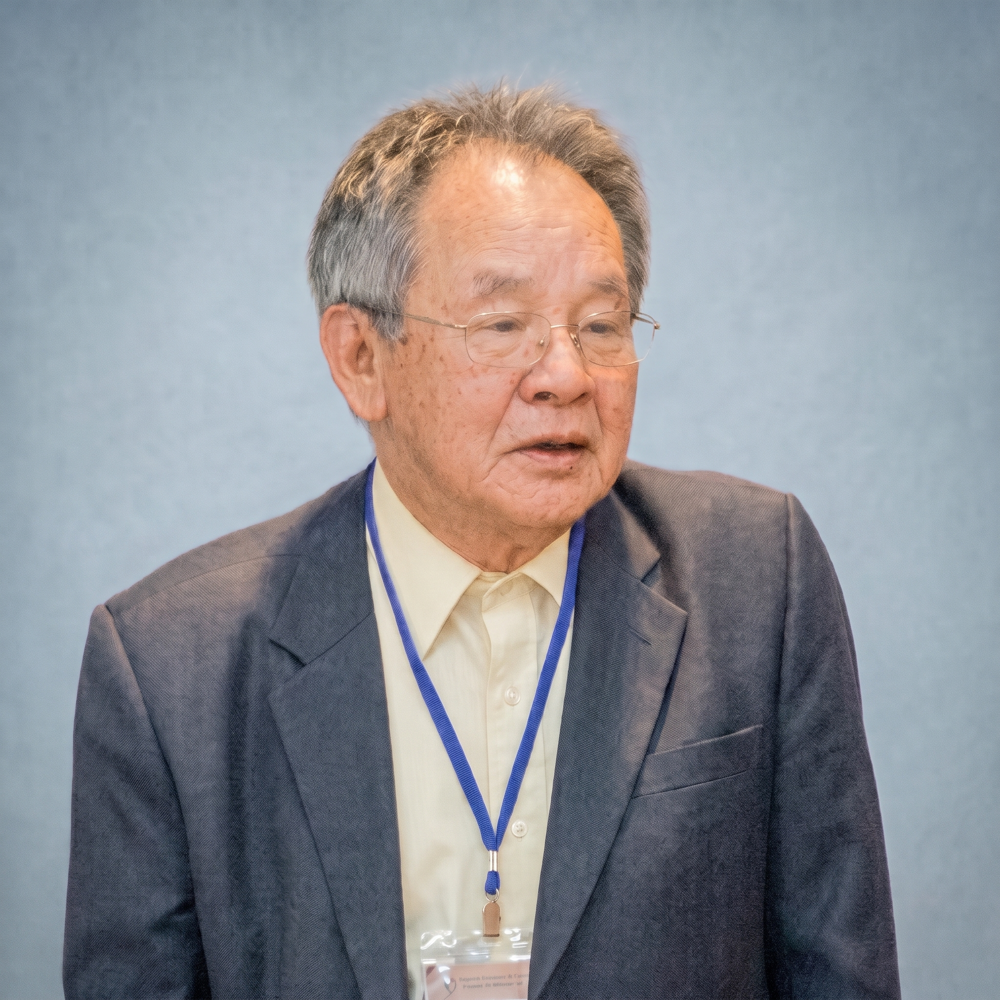

Keynote Speakers

Adélio Cavadas
Instituto Politécnico de Viana do Castelo, Portugal
Keynote Speaker

Hung T. Nguyen
New Mexico State University (USA) & Chiang Mai University (Thailand)
Keynote Speaker

Ioannis Sarris
University of West Attica, Greece
Keynote Speaker

Mohamed Amine Khamsi
Khalifa University, United Arab Emirates